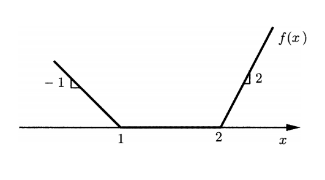

Chapter 1#
Exercise 1.1*#
Suppose that a function \(f: \mathcal{R}^n \rightarrow \mathcal{R}\) is both concave and convex. Prove that \(f\) is an affine function.
Solution:
The definition of affine function: a function of the form \(f(x) = a_0 + \sum_{i=1}^n a_ix_i\), where \(a_0, . . . , a_n\) are scalars, called an affine function.
We must show that \(f\) can be written in this form. Let \(g(x)=f(x)-f(0)\), so \(f(x)=f(0)+g(x)\). After making \(a_0=f(0)\), we must show \(g(x)\) can be in the form \(g(x)=\sum_{i=1}^na_ix_i\) in the next step.
To do this, we must show that \(g(ax)=ag(x)\) for any scalar \(a\) and \(g(x+y)=g(x)+g(y)\) for any \(x,y\in\mathcal{R}^n\).
Recall that \(f\) is both convex and concave, for any two points \(x,y\in\mathcal{R}^n\) and any \(0\leq \lambda\leq 1\), \(f[\lambda x+(1-\lambda)y]=\lambda f(x)+(1-\lambda)f(y)\),
if \(a=0\), it is trival that \(g(ax)=ag(x)\) since \(g(0)=0\).
if \(0<a\leq 1\),
if \(a>1\),
Based on the above situations of \(a\), we can prove that \(g(x+y)=g(x)+g(y)\):
By making use of the above formula, we can also get:
if \(a<0\),
Now we have proved that for \(g(ax)=ag(x)\) for any scalar \(a\) and \(g(x+y)=g(x)+g(y)\) for any \(x,y\in\mathcal{R}^n\). So \(g(x)\) can be in the form \(g(x)=\sum_{i=1}^na_ix_i\) and \(f(x)\) can be in the form \(f(x) = a_0 + \sum_{i=1}^n a_ix_i\). Therefore, \(f\) is an affine function.
\(\Box\).
Note
The first exercise in this book is non-trival at all!
Exercise 1.2#
Suppose that \(f_1 , \dots, f_m\) are convex functions from \(\mathcal{R}^n\) into \(\mathcal{R}\) and let \(f(x) = \sum_{i=1}^m f_i(\mathbf{x})\).
(a) Show that if each \(f_i\) is convex, so is \(f\).
(b) Show that if each \(f_i\) is piecewise linear and convex, so is \(f\).
Solution:
Proof.
(a) for any two \(\mathbf{x},\mathbf{y}\in \mathcal{R}^n\) and \(\lambda \in [0, 1]\),
Therefore, \(f\) is convex.
(b) The definition of piecewise linear convex function: a function of this form \(\max_{j=1,\dots,k} (\mathbf{c_j^Tx}+d_j)\).
Since each \(f_i\) is piecewise linear convex,
It is obvious that \(\max\{a, b\}+\max\{c,d\}=\max\{a+c, a+d, b+c, b+d\}\), i.e., the sum of several max expressions equals the max of all possible sums of selecting one element from each max expression.
Therefore, we can enumerate all the possible combinations of the sums to tranform \(f\) in a linear convex form:
There are \(\Pi_i k_i\) combinations, in which \(k_i\) is the number of affine functions in the expression of \(f_i\).
\(\Box\)
Exercise 1.3#
Consider the problem of minimizing a cost function of the form \(\mathbf{c'x} + f(\mathbf{d'x})\), subject to the linear constraints \(Ax\geq b\). Here, \(d\) is a given vector and the function \(f : \mathcal{R}\rightarrow\mathcal{R}\) is as specified in the following figure. Provide a linear programming formulation of this problem.

Solution:
From the picture, function \(f\) can be exressed as:
\begin{align} f(x)=\begin{cases} -x+1\quad &x\leq 1\ 0\quad &1<x\leq 2\ 2(x-2)\quad &x>2. \end{cases} \end{align}
\(f\) is apparently a piecewise linear convex function and can also be exressed as:
By adding another variable \(z\), the linear programming formulation of this problem is:
Exercise 1.4#
Consider the problem
and reformulate it as a linear programming problem.
Solution:
With additional variables \(z_1\), \(z_2\), \(z_3\), we can formulate the linear programming problem below:
Exercise 1.5#
Consider a linear optimization problem, with absolute values, of the following form:
Assume that all entries of \(\mathbf{B}\) and \(\mathbf{d}\) are nonnegative.
(a) Provide two different linear programming formulations, along the lines discussed in Section 1.3.
(b) Show that the original problem and the two reformulations are equivalent in the sense that either all three are infeasible, or all three have the same optimal cost.
(c) Provide an example to show that if \(\mathbf{B}\) has negative entries, the problem may have a local minimum that is not a global minimum. (It will be seen in Chapter 2 that this is never the case in linear programming problems. Hence, in the presence of such negative entries, a linear programming reformulation is implausible.)
Solution:
(a) The first formulation:
The second formulation:
(b) Proof
We prove the equivalence by pairs.
original formulation \(\Longleftrightarrow\) the first formulation
Assume one feasible solution for original formulation is \(\mathbf{x}^0\), \(\mathbf{y}^0\). Let \(\mathbf{x}^1=\mathbf{x}^0\), \(\mathbf{y}^1=\mathbf{y}^0\). Apparently, \(\mathbf{x}^1, \mathbf{y}^1\) is feasible for the first formulation.
Conversely, assume one feasible solution for the first formulation is \(\mathbf{x}^1\), \(\mathbf{y}^1\). Let \(\mathbf{x}^0=\mathbf{x}^1\), \(\mathbf{y}^0=\mathbf{y}^1\). Apparently, \(\mathbf{x}^0, \mathbf{y}^0\) is feasible for the original formulation.
In addition, since the coefficients in the objective are same. The original formulation and the first formulation are equivalent: either have equal optimal cost or both are infeasible.
the second formulation \(\Longleftrightarrow\) original formulation
First we show that in the optimal solution of the second formulation, \(x_i^+\) and \(x_i^-\), \(\forall i\) can not be both positive. If \(x_i^+\) and \(x_i^-\) are both positive, because the objective is to minimize and \(\mathbf{d}, \mathbf{B}\) are nonnegative, we can reduce some value for \(x_i^+\) and \(x_i^-\) to make one of them be zero while satisfying the constraints and reducing the objective value.
For the optimal solution of the second formulation , from above we know either \(x_i^+=0\) or \(x_i^-=0\), \(\forall i\). Let \(x_i^0=x_i^+-x_i^-\), \(y_i^0=x_i^++x_i^-\), we get a feasible solution for the original formulation.
For a feasible solution of the original formulation, letting \(x_i^+=\max\{x_i^0, 0\}\), \(x_i^-=\max\{-x_i^0, 0\}\), we get a feasible solution for the second formulation.
Therefore, the optimal solution of the second formulation is a feasible solution of the originial formulation and any feasible solution of the original formulation is a feasible solution of the second formulation. Hence, by proof of contradiction, the optimal solution for the orignial formulation is same with the second formulation; and if one formulation is infeasible, the other formulation must also be infeasible.
(3) When \(\mathbf{B}\) has negative entries, the feasible region for this problem may be not convex. Since entries of \(\mathbf{d}\) are still nonnegative, the objective function is still piecewise convex. In this situation, the problem may have a local minimum that is not a global minimum.
For example,
It can also be written as:
The picture of this problem is:
import matplotlib.pyplot as plt
import numpy as np
x1 = np.linspace(2, 3, 100)
x2 = np.linspace(-1/1.5, 0, 100)
y1 = x1
y2 = -x2
plt.plot(x1, y1)
plt.plot(x2, y2)
plt.scatter(2,2)
plt.show()
Apparently, (2, 2) is local minimum of the problem, but it is not a global minimum.
Exercise 1.6#
Provide linear programming formulations of the two variants of the rocket control problem discussed at the end of Section 1.3.
Solution:
Minimize the total fuel:
Minimize the maximum thrust required:
Exercise 1.7 (The moment problem)#
Suppose that \(Z\) is a random variable taking values in the set \(0, 1 , \dots, K\), with probabilities \(p_0, p_1,\dots, p_k\), respectively. We are given the values of the first two moments \(E[Z] = \sum_{k=0}^K kp_k\) and \(E[Z^2]=\sum_{k=0}^Kk^2p_k \) of \(Z\) and we would like to obtain upper and lower bounds on the value of the fourth moment \(E[Z^4]=\sum_{k=0}^Kk^4p_k\) of \(Z\). Show how linear programming can be used to approach this problem.
Solution:
The decision variables are \(p_0,\dots,p_K\). Build the linear programming model below to get the upper bound:
Replace \(\max\) with \(\min\) in the upper objective to get the lower bound.
Exercise 1.8 (Road lighting)#
Consider a road divided into \(n\) segments that is illuminated by \(m\) lamps. Let \(p_j\) be the power of the \(j_{th}\) lamp. The illumination \(I_i\) of the \(i_{th}\) segment is assumed to be \(\sum_{j=1}^m a_{ij}p_j\) , where \(a_{ij}\) are known coefficients. Let \(I_i\) be the desired illumination of road \(i\). We are interested in choosing the lamp powers \(p_j\) so that the illuminations \(I_i\) are close to the desired illuminations \(I_i^\ast\) . Provide a reasonable linear programming formulation of this problem. Note that the wording of the problem is loose and there is more than one possible formulation.
Solution:
Exercise 1.9#
Consider a school district with \(I\) neighborhoods, \(J\) schools, and \(G\) grades at each school. Each school \(j\) has a capacity of \(C_{jg}\) for grade \(g\). In each neighborhood \(i\), the student population of grade \(g\) is \(S_{ig}\) . Finally, the distance of school \(j\) from neighborhood \(i\) is \(d_{ij}\) . Formulate a linear programming problem whose objective is to assign all students to schools, while minimizing the total distance traveled by all students. (You may ignore the fact that numbers of students must be integer.)
Solution:
Let \(x_{igj}\) be the number of students in neighborhood \(i\) of grade \(g\) that is alligned to the school \(j\).
Exercise 1.10 (Production and inventory planning)#
A company must deliver \(d_i\) units of its product at the end of the \(i_{th}\) month. Material produced during a month can be delivered either at the end of the same month or can be stored as inventory and delivered at the end of a subsequent month; however, there is a storage cost of \(c_1\) dollars per month for each unit of product held in inventory. The year begins with zero inventory. If the company produces \(x_i\) units in month \(i\) and \(x_{i+1}\) units in month \(i + 1\), it incurs a cost of \(c_2|x_{i+1} - x_i|\) dollars, reflecting the cost of switching to a new production level. Formulate a linear programming problem whose objective is to minimize the total cost of the production and inventory schedule over a period of twelve months. Assume that inventory left at the end of the year has no value and does not incur any storage costs.
Solution:
Let \(I_i\) be the end-of-period inventory at the \(i_{th}\) month.\(I_0=0,x_0=0\). We build the liner programming model below:
Exercise 1.11 (Optimal currency conversion)#
Suppose that there are \(N\) available currencies, and assume that one unit of currency \(i\) can be exchanged for \(r_{ij}\) units of currency \(j\). (Naturally, we assume that \(r_{ij} > 0\).) There also certain regulations that impose a limit \(U_i\) on the total amount of currency \(i\) that can be exchanged on any given day. Suppose that we start with \(B\) units of currency 1 and that we would like to maximize the number of units of currency \(N\) that we end up with at the end of the day, through a sequence of currency transactions. Provide a linear programming formulation of this problem. Assume that for any sequence \(i_1, \dots, i_k\) of currencies, we have \(r_{i_1i_2}r_{i_2i_3}\dots r_{i_{k - 1}i_k}r_{i_ki_1} \leq 1\), which means that wealth cannot be multiplied by going through a cycle of currencies.
Solution:
Let \(x_{ij}\) be the amount of currency \(i\) that exchanges for currency \(j\).
Exercise 1.12 (Chebychev center)#
Consider a set \(P\) described by linear inequality constraints, that is, \(P =\{\mathbf{x} \in \mathcal{R}^n\mid \mathbf{a'x} \leq b_i , i = 1,\dots,m\}\). A ball with center \(\mathbf{y}\) and radius \(r\) is defined as the set of all points within (Euclidean) distance \(r\) from \(\mathbf{y}\). We are interested in finding a ball with the largest possible radius, which is entirely contained within the set \(P\). (The center of such a ball is called the Chebychev center of \(P\).) Provide a linear programming formulation of this problem.
Solution:
For a center point \(\mathbf{y}\), the ball with radius \(r\) can be represented as:
However, the above formula is not linear. We need to find a smart way to describe the ball inside the polyhedron by linear constraints.
For a ball centered at \(y\) with radius \(r\), it can also be represented by the following set:
where \(\mathbf{v}\) is a random vector. The ball should be also in the polyhedron set. Hence,
The above formula should be hold for any \(\mathbf v\) that satifies \(\|\mathbf{v}\|\leq r\). By Cauchy-Schwarz inequality,
Therefore, the ball in the polyhedron set should satisfy the following linear constraint:
Finally, the liner programming model can be formulated below:
Note
This exercise is not trivial!
Exercise 1.13 (Linear fractional programming)#
Consider the problem
Suppose that we have some prior knowledge that the optimal cost belongs to an interval \([K, L]\). Provide a procedure, that uses linear programming as a subroutine, and that allows us to compute the optimal cost within any desired accuracy. Hint: Consider the problem of deciding whether the optimal cost is less than or equal to a certain number.
Solution:
Let \(\frac{\mathbf{c'x}+d}{\mathbf{f'x}+g}=\alpha\) and reformulate the model below:
The above model is not linear because of the last constraint. However, for a given value of \(\alpha\), it is linear. From the exercise stem we know that \(\alpha\) is in the interval \([K, L]\). The question now is how to search the value of \(\alpha\) in the interval \([K, L]\).
We can use some linear search method like binary search Algorithm 1 to get the value of \(\alpha\) in the interval \([K, L]\).
Algorithm 1 (Binary search algorithm for linear fractional programming)
Inputs Given a desired accuracy \(\epsilon\)
Output The value of \(\alpha\) within accuracy \(\epsilon\)
\(k \leftarrow K\), \(l\leftarrow L\)
While \(l-k>\epsilon\):
\(\alpha=\frac{l-k}{2}\)
Solve the linear programming model and let \(\alpha_0\leftarrow \frac{\mathbf{c'x}+d}{\mathbf{f'x}+g}\)
If \(\alpha_0>\alpha\), \(k\leftarrow \alpha\); else \(l\leftarrow \alpha\)
Exercise 1.14#
A company produces and sells two different products. The demand for each product is unlimited, but the company is constrained by cash availability and machine capacity. Each unit of the first and second product requires 3 and 4 machine hours, respectively. There are 20,000 machine hours available in the current production period. The production costs are \(\$\)3 and \(\$\)2 per unit of the first and second product, respectively. The selling prices of the first and second product are \(\$\)6 and \(\$\)5.40 per unit, respectively. The available cash is \(\$\)4,000; furthermore, 45% of the sales revenues from the first product and 30% of the sales revenues from the second product will be made available to finance operations during the current period.
(a) Formulate a linear programming problem that aims at maximizing net income subject to the cash availability and machine capacity limitations.
(b) Solve the problem graphically to obtain an optimal solution.
(c) Suppose that the company could increase its available machine hours by 2,000, after spending \(\$\)400 for certain repairs. Should the investment be made?
Solution:
(a) Let \(x_1\), \(x_2\) be the production quantity of the two products, respectively. The linear programming model is below:
(b) omit
(c) omit
Exercise 1.15#
A company produces two kinds of products. A product of the first type requires 1/4 hours of assembly labor, 1/8 hours of testing, and \(\$\)1.2 worth of raw materials. A product of the second type requires 1/3 hours of assembly, 1/3 hours of testing, and \(\$\)0.9 worth of raw materials. Given the current personnel of the company, there can be at most 90 hours of assembly labor and 80 hours of testing, each day. Products of the first and second type have a market value of \(\$\)9 and \(\$\)8, respectively.
(a) Formulate a linear programming problem that can be used to maximize the daily profit of the company.
(b) Consider the following two modifications to the original problem:
(i) Suppose that up to 50 hours of overtime assembly labor can be scheduled, at a cost of \(\$\)7 per hour.
(ii) Suppose that the raw material supplier provides a 10% discount if the daily bill is above \(\$\)300.
Which of the above two elements can be easily incorporated into the linear programming formulation and how? If one or both are not easy to incorporate, indicate how you might nevertheless solve the problem.
Solution:
(a) Let \(x_1\), \(x_2\) be the production quantity of the two products, respectively. The linear programming model is below:
(b) for (i), let \(y\) the overtime assembly labor scheduled,
for (ii), formulate 2 linear programming models:
if the daily bill is less than 300,
if the daily bill is above 300,
Solve the two models and compare which one obtains bigger profit.
Exercise 1.16#
A manager of an oil refinery has 8 million barrels of crude oil A and 5 million barrels of crude oil B allocated for production during the coming month. These resources can be used to make either gasoline, which sells for \(\$\)38 per barrel, or home heating oil, which sells for \(\$\)33 per barrel. There are three production processes with the following characteristics:
process 1 |
process 2 |
process 3 |
|
|---|---|---|---|
input crude A |
3 |
1 |
2 |
input crude B |
5 |
1 |
3 |
output gasolin |
4 |
1 |
3 |
output heating oil |
3 |
1 |
4 |
cost |
\(\$\)51 |
\(\$\)11 |
\(\$\)40 |
All quantities are in barrels. For example, with the first process, 3 barrels of crude A and 5 barrels of crude B are used to produce 4 barrels of gasoline and 3 barrels of heating oil. The costs in this table refer to variable and allocated overhead costs, and there are no separate cost items for the cost of the crudes. Formulate a linear programming problem that would help the manager maximize net revenue over the next month.
Solution:
Let \(x_1\), \(x_2\) and \(x_3\) be the number of production processes opend for process 1, 2, 3, respectively.
Exercise 1.17 (Investment under taxation)#
An investor has a portfolio of \(n\) different stocks. He has bought \(s_i\) shares of stock \(i\) at price \(p_i\), \(i = 1, \dots, n\). The current price of one share of stock \(i\) is \(q_i\). The investor expects that the price of one share of stock \(i\) in one year will be \(r_i\). If he sells shares, the investor pays transaction costs at the rate of 1% of the amount transacted. In addition, the investor pays taxes at the rate of 30% on capital gains. For example, suppose that the investor sells 1,000 shares of a stock at \(\$\)50 per share. He has bought these shares at \(\$\)30 per share. He receives \(\$\)50,000. However, he owes 0.30 \(\times\) (50,000 - 30,000) = \(\$\)6,000 on capital gain taxes and 0.01 x (50,000) = \(\$\)500 on transaction costs. So, by selling 1,000 shares of this stock he nets 50,000 - 6,000 - 500 = \(\$\)43,500. Formulate the problem of selecting how many shares the investor needs to sell in order to raise an amount of money \(K\), net of gains and transaction costs, while maximizing the expected value of his portfolio next year.
Solution:
Let \(x_i\) be amount of shares the investor needs to sell for stock \(i\).The linear model is below:
Exercise 1.18#
Show that the vectors in a given finite collection are linearly independent if and only if none of the vectors can be expressed as a linear combination of the others.
Solution:
Proof
Let those vectors be \(\mathbf{v}_1, \mathbf{v}_2, \dots, \mathbf{v}_n\).
(1) We first prove that “the vectors in a given finite collection are linearly independent” \(\Rightarrow\) “none of the vectors can be expressed as a linear combination of the others”.
We prove by contradiction. If there exists one vector \(v_k\) that can be expressed as a linear combination of others, then there exists not all zero scalers \(a_i (i\neq k)\):
i.e.,
meaning that there \(\mathbf{v}_i (i=1,\dots,n)\) are linear dependent. This contradicts with the argument that the vectors in a given finite collection are linearly independent.
(2) Then, we prove “none of the vectors can be expressed as a linear combination of the others” \(\Rightarrow\) “the vectors in a given finite collection are linearly independent”.
We prove by contradiction. Suppose there exists vectors \(\mathbf{v}_1,\dots, \mathbf{v}_n\) that are liner dependent, i.e., there exists not all zero scalers \(a_i\):
Suppose \(a_k\neq 0\) \((k\in [1,\dots,n])\), we have
i.e., \(\mathbf{v}_k\) can be expressed as a linear combination of the others. This contradicts with the argument.
\(\Box\)
Exercise 1.19#
Suppose that we are given a set of vectors in \(\mathcal{R}^n\) that form a basis, and let \(\mathbf{y}\) be an arbitrary vector in \(\mathcal{R}^n\) . We wish to express \(\mathbf{y}\) as a linear combination of the basis vectors. How can this be accomplished?
Solution:
Let \(\mathbf{v}_1, \dots, \mathbf{v}_n\) be the basis vectors. Suppose the elements of vector \(\mathbf{y}\) are \(y_i\) (\(i=1,\dots, n\)) and the elements for \(\mathbf{v}_k\) (\(k=1,\dots, n\)) are \(v_{ki}\) (\(i=1,\dots, n\)).
We can build a system of linear equations:
After solving the equation set, we can express \(\mathbf{y}\) as follows:
Exercise 1.20#
(a) Let \(S = \{\mathbf{Ax} \mid \mathbf{x} \in \mathcal{R}^n \}\), where \(\mathbf{A}\) is a given matrix. Show that \(S\) is a subspace of \(\mathcal{R}^n\) .
(b) Assume that \(S\) is a proper subspace of \(\mathcal{R}^n\). Show that there exists a matrix \(\mathbf{B}\) such that \(S = \{\mathbf{y} \in \mathcal{R}^n \mid \mathbf{By = 0}\}\). Hint: Use vectors that are orthogonal to \(S\) to form the matrix \(\mathbf{B}\).
(c) Suppose that \(V\) is an \(m\)-dimensional affine subspace of \(\mathcal{R}^n\), with \(m < n\). Show that there exist linearly independent vectors \(\mathbf{a}_1,\dots,\mathbf{a}_{n-m}\) , and scalars \(b_1, \dots, b_{n-m}\), such that
Solution:
(a)
Proof
For two scalers \(a\) and \(b\), when \(\mathbf{x}, \mathbf{y}\in\mathcal{R}^n\), \(a\mathbf{x}+b\mathbf{y}\in\mathcal{R}^n\). Therefore, if \(\mathbf{x}, \mathbf{y}\in S\), by the definition of \(S\), \(\mathbf{A(ax+by)}\in S\), i.e,. \(S\) is a subspace of \(\mathcal{R}^n\).
\(\Box\)
Definition 1
A nonempty subset \(S\) of \(\mathcal{R}^n\) is called a subspace of \(\mathcal{R}^n\) if \(a\mathbf{x} + b\mathbf{y} \in S\) for every \(\mathbf{x}, \mathbf{y} \in S\) and every \(a, b \in \mathcal{R}\).
(b)
Proof
Since \(S\) is a proper subspace of \(\mathcal{R}^n\), assume the dimension of \(S\) is \(m\), then \(m<n\). We can find \(n-m\) vectors that are orthogonal to each other and orthogonal to \(S\). Let \(\mathbf{v}_1,\dots,\mathbf{v}_{n-m}\) be ones of those vectors. Then, matrix \(\mathbf{B}\) can be:
Apparently, for every vector \(\mathbf{y}\in S\), \(\mathbf{By}=0\).
Next we show that for any \(\mathbf{y}\notin S, \mathbf{y}\in \mathcal{R}^n\), \(\mathbf{By}\neq 0\). If \(\mathbf{y}\notin S\), then \(\mathbf{y}\) is independent of any vector in \(S\). \(\mathbf{y}\) should be dependent on the vectors in \(\mathbf{B}\). If this is not the case, \(\mathbf{y}\) is both independent on \(B\) and \(S\). then the dimension of the set \(\{S, B, y\}\) exceeds \(n\). As \(\mathbf{y}\) is dependent on the vector in \(\mathbf{B}\), \(\mathbf{B}y\neq 0\).
Based on the above two situations, \(S = \{\mathbf{y} \in \mathcal{R}^n \mid \mathbf{By = 0}\}\).
(c)
Proof
Since \(S\) is a affine subspace, then there exists a linear subspace \(S_0\) and a vector \(\mathbf{x}_0\) that
From part (b), \(S_0\) can be represented as \(S_0=\{\mathbf{y} \in \mathcal{R}^n \mid \mathbf{By = 0}\}\). So, \(S\) can be represented as:
Therefore, let \(\mathbf{a}_1,\dots,\mathbf{a}_{n-m}\) be the column vectors of \(\mathbf{B}\) and \(b_i\) be the elements in the vector \(\mathbf{Bx_0}\), we can get the desired result.
\(\Box\)